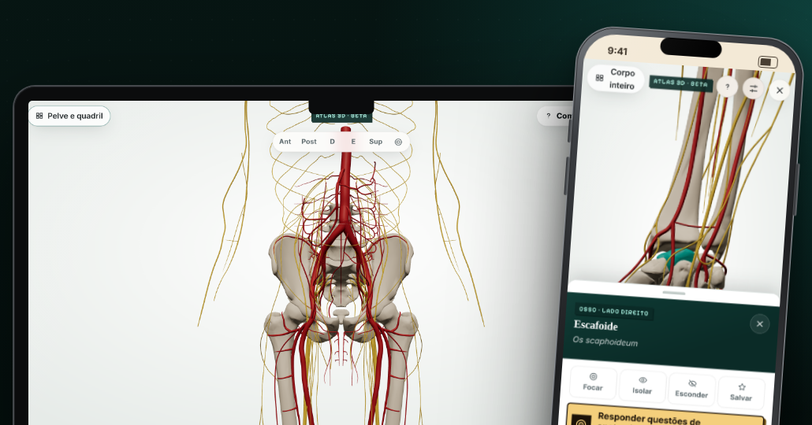
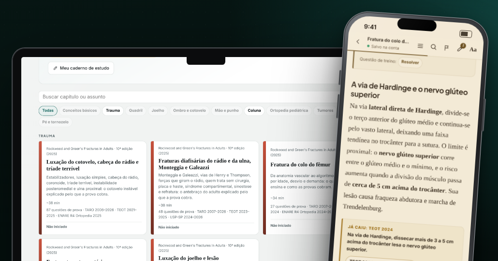
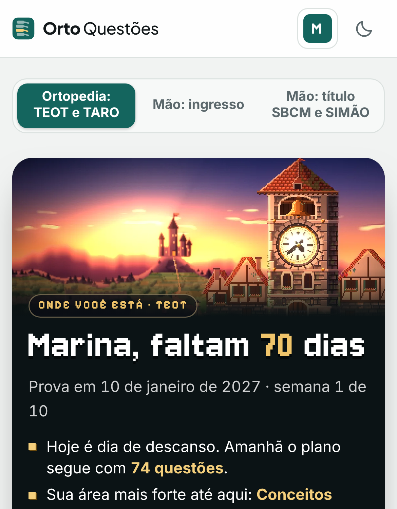

P.S. da carta
Cada comentário é uma miniaula.
A certa e cada errada explicadas, com o livro e a página.
Caderno de errosFlashcardsSimuladosTemas que mais caem

Atlas 3D
Resumos dos capítulos
Cronograma até a prova
O comentário de verdade
Comece a treinar grátis
Até 20 questões comentadas por dia · ortoquestoes.com.br · Telas ilustrativas